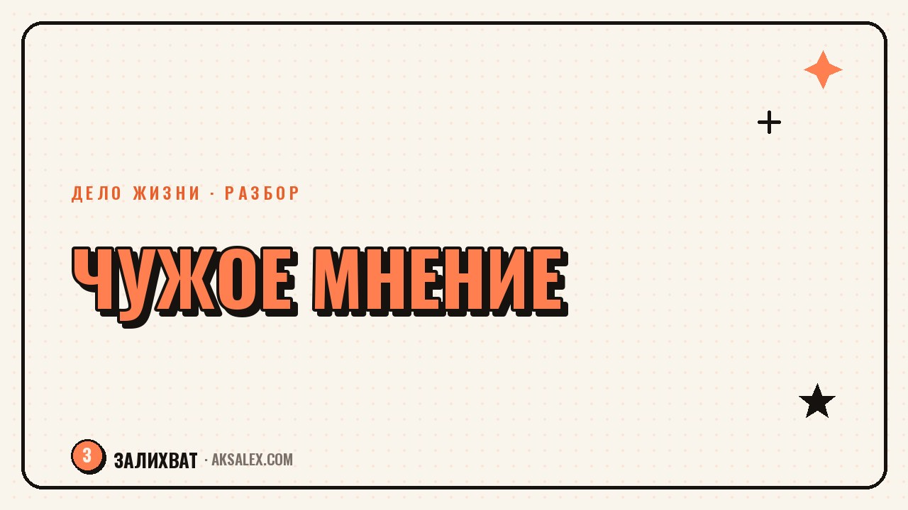

Страх чужого мнения: как перестать оглядываться

Ты написал пост и трижды перечитал его перед публикацией, представляя, что скажут знакомые. Отказался от идеи, потому что «а вдруг подумают, что я лезу не в своё дело». Этот внутренний цензор знаком почти всем, и дело не в слабости характера, а в том, как устроено наше внимание к социальной оценке. Разберём, откуда берётся страх чужого мнения и что реально помогает с ним работать, без лозунгов «не обращай внимания и всё».
Откуда берётся страх чужого мнения
Оценка окружающих - не выдуманная проблема, а древний механизм выживания: раньше изгнание из группы буквально угрожало жизни, и мозг до сих пор реагирует на возможное неодобрение как на опасность. Поэтому тревога перед публикацией поста или высказыванием своего мнения ощущается физически - учащается пульс, появляется желание отменить, удалить, промолчать.
У этого страха обычно есть конкретный источник: критика в детстве за «неправильные» увлечения, опыт публичного высмеивания, семья, где любое отличие от нормы воспринималось как повод для замечаний. Если в какой-то момент своей истории ты усвоил, что выделяться опасно, тело будет напоминать об этом каждый раз, когда ты собираешься сделать что-то заметное.
Страх чужого мнения - это не недостаток уверенности в себе, а выученная реакция. А то, что выучено, можно переучить, пусть и не за один вечер.
Почему совет 'не обращай внимания' не работает
Совет перестать думать о мнении других звучит логично, но игнорирует то, как устроена тревога: чем сильнее запрещаешь себе думать об оценке, тем навязчивее эта мысль возвращается. Это похоже на просьбу не думать о белой обезьяне - запрет только усиливает фокус внимания на запретной теме.
Что работает лучше запрета
- Не бороться с мыслью о чужой оценке, а замечать её и называть вслух или на бумаге
- Разделять факт действия и воображаемую реакцию окружающих на него
- Искать не отсутствие тревоги, а способность действовать вместе с ней
- Проверять предположения о реакции других через реальный разговор, а не догадки
- Снижать ставки - делать маленький заметный шаг, а не сразу самый пугающий
На практике это значит: вместо того чтобы требовать от себя смелости и бесстрашия, ты учишься публиковать пост с остающимся волнением в теле. Со временем мозг видит, что прогнозируемая катастрофа не случилась, и тревога постепенно снижается сама - это медленный процесс, но он работает надёжнее запретов.
Как отличить полезную обратную связь от страха осуждения
Важно не путать два разных процесса: осторожность, основанную на реальной обратной связи близких людей, и тревогу, которая срабатывает ещё до того, как кто-либо вообще что-то сказал. Первое - рабочий механизм, который помогает корректировать действия. Второе - внутренний прогноз худшего сценария, часто никак не связанный с реальностью.
Рабочий способ проверить: если критика пришла от конкретного человека с конкретным аргументом - это обратная связь, с ней можно работать. Если ты заранее представляешь, что «все подумают» или «люди скажут», но никто ещё ничего не сказал - это фантазия тревоги, а не факт, и на неё не стоит опираться при принятии решений.
Практические шаги, которые реально помогают
Работа со страхом чужого мнения не требует грандиозных перемен - она строится из небольших повторяющихся действий, которые постепенно меняют отношения с тревогой.
| Шаг | В чём суть | Как начать |
|---|---|---|
| Фиксация мысли | Заметить и записать конкретный страх вместо смутного беспокойства | Пару строк в заметках: «боюсь, что подумают X» |
| Проверка реальностью | Сравнить прогноз с тем, что происходило раньше в похожих ситуациях | Вспомнить 2-3 случая, когда опасения не подтвердились |
| Маленький риск | Сделать заметное действие с низкой ценой ошибки | Высказать мнение в узком кругу, прежде чем публично |
| Разбор реакции | Честно оценить, что произошло на самом деле после действия | Записать факт, а не домысел о чужих мыслях |
Эти шаги не убирают тревогу полностью, но постепенно расширяют зону, в которой ты можешь действовать несмотря на неё. Повторение важнее интенсивности - лучше маленький шаг каждую неделю, чем один большой рывок раз в полгода.
Когда стоит обратиться за поддержкой
Если страх чужого мнения настолько силён, что мешает работать, общаться или выходить из дома, это уже не вопрос самостоятельной работы над собой - здесь полезен разговор со специалистом, который разбирается в тревожных состояниях. Самостоятельные шаги из этой статьи хорошо работают с бытовым, повседневным страхом осуждения, но не заменяют терапию там, где тревога стала хронической.
Отличить одно от другого можно так: если упражнения постепенно, пусть медленно, расширяют твою свободу действий - двигайся дальше сам. Если тревога не снижается месяцами и влияет на базовые сферы жизни, это сигнал обратиться за помощью, а не повод винить себя за недостаточную силу воли.
Частые вопросы
Как перестать бояться чужого мнения полностью
Полностью убрать этот страх вряд ли получится - он встроен в нашу природу. Реалистичная цель - научиться действовать несмотря на тревогу, а не ждать, пока она исчезнет сама.
Почему я боюсь осуждения даже от незнакомых людей
Мозг реагирует на потенциальное неодобрение как на угрозу вне зависимости от того, насколько близок человек. Это механизм выживания, а не признак того, что мнение незнакомцев действительно важно для твоей жизни.
Что делать, если критика все-таки звучит в ответ
Стоит отделить факт от эмоции: выслушать конкретный аргумент, если он есть, и отбросить обобщения вроде «все считают». Одна реакция одного человека - это не приговор и не универсальная правда.
Помогает ли меньше смотреть соцсети при страхе осуждения
Да, временное снижение потока чужих мнений даёт пространство, чтобы услышать собственные мысли без постоянного сравнения. Это не решение проблемы целиком, но полезная пауза для перезагрузки.
Как понять, что страх уже мешает жить, а не только неприятен
Если из-за тревоги ты систематически отказываешься от важных для себя действий - работы, общения, высказываний - и это длится месяцами, стоит обратиться к специалисту, а не пытаться справиться только своими силами.
Раз тема оказалась полезной, вот что почитать следующим. Как флористу использовать нейросети: заказы, подбор композиций и контент для соцсетей без потери своего стиля.
Читать статью →а не вручную